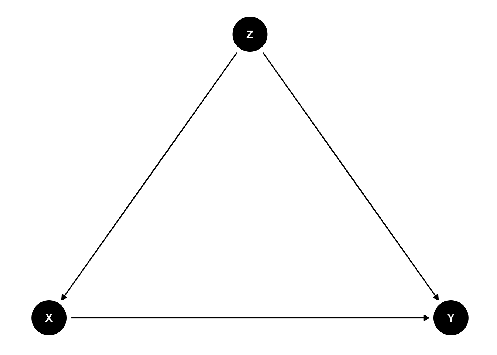

Chapter 8 回帰分析の活用
本章では、前章で学んだ回帰分析を発展させて、複数の独立変数を扱う方法について説明する。
内容に入る前に、右上のプロジェクトのボックスの横が、前章で作成したプロジェクトの名前（たとえば、seminar_sociology_r）になっているかどうかを確認しておこう。なっていない場合は、右上のボックスをクリックして、「Open Project…」を選択し、前章で作成したRprojファイル（たとえば、seminar_sociology_r.Rprojといったような名前になっている）を選んで、プロジェクトを切り替えよう。
さらに、これまでの章で説明した以下のパッケージを読み込んだ上で、第4章で作成したデータを読み込んでpiaacというデータフレームに入れていることを前提とする。具体的には、以下のコードを実行しておく必要がある。
library(tidyverse)
library(gtsummary)
library(flextable)
library(modelsummary)
piaac <- read_rds("data/piaac_sample_analytic.rds")第5章で確認したように、ggplotの設定を変更しておくことで見やすいグラフを作ることができる。ここでは以下のコードを実行している。
Macの場合：
theme_set(theme_bw(
base_family = "HiraginoSans-W3",
base_size = 11,
base_rect_size = 0.2,
base_line_size = 0.2
))Windowsの場合：
8.1 重回帰分析
先の単回帰分析では、年齢、性別、学歴、数的思考力スコアによって賃金が異なっていることをみた。これら4つの変数を同時に考慮することで、賃金の分散をよりよく説明できるモデルを作ることができないだろうか？このようなときに役に立つのが、重回帰分析である。
今推定したい式は次のように書くことができる。
\[ y = \beta_0 + \beta_1年齢 + \beta_2女性 + \beta_3高校卒 + \beta_4短大高専卒 + \beta_5大学大学院卒 + \beta_6数的思考力スコア \]
\(\beta_1\)が年齢の係数、\(\beta_2\)が（男性と比較したときの）女性の係数、\(\beta_3, \beta_4, \beta_5\)が（中学卒と比較したときの）高校卒、短大高専卒、大学大学院卒の係数を、\(\beta_6\)が数的思考力スコアの係数を、それぞれ表す。各係数は、他の変数を一定として（統制 controlして、ともいう）、当該変数の値が1単位増えると\(y\)がどれだけ変化するのか、という独立の影響力を測っていることになる。
単回帰分析のときと同じように、lm()関数を使って推定することができる。ここでは、賃金の測定の際により一般的に使われる、対数変換した賃金（logwage）を用いる。正負の解釈については通常と同じだが、係数の値についての解釈は少しだけ勉強が必要になる。くわしくは前章「対数変換」を参照のこと。
##
## Call:
## lm(formula = logwage ~ age + gender + educ + numeracy, data = piaac)
##
## Residuals:
## Min 1Q Median 3Q Max
## -1.23602 -0.31230 -0.03953 0.29831 1.89012
##
## Coefficients:
## Estimate Std. Error t value Pr(>|t|)
## (Intercept) 5.7551032 0.0833818 69.021 < 2e-16 ***
## age 0.0085794 0.0008344 10.282 < 2e-16 ***
## gender男性 0.3915738 0.0184461 21.228 < 2e-16 ***
## educ高校 0.0784268 0.0347435 2.257 0.0241 *
## educ短大高専 0.1725538 0.0370332 4.659 3.32e-06 ***
## educ大学大学院 0.3395225 0.0380275 8.928 < 2e-16 ***
## numeracy 0.0027443 0.0002375 11.553 < 2e-16 ***
## ---
## Signif. codes: 0 '***' 0.001 '**' 0.01 '*' 0.05 '.' 0.1 ' ' 1
##
## Residual standard error: 0.4574 on 2721 degrees of freedom
## Multiple R-squared: 0.3123, Adjusted R-squared: 0.3108
## F-statistic: 205.9 on 6 and 2721 DF, p-value: < 2.2e-16それぞれ係数、標準誤差、p値のみかたはいずれも前回と同じである。
一般的に、重回帰分析の式は次のように書ける。
\[ y = \beta_0 + \beta_1x_1 + \beta_2x_2 + \cdots + \beta_kx_k \]
係数\(\beta_1\)は、他の変数\(x_2, \cdots, x_k\)を一定としたうえで、\(x_1\)の値が1単位増えると\(y\)がどれだけ変化するのかを示す。
重回帰分析の係数はやはり最小二乗法によって推定される。
8.2 交絡要因の統制
8.2.1 交絡とは何か
では実際、重回帰分析はどのようなことを知りたいときに使うのだろうか。たとえば、高い数的思考力スコアが高いとどれくらい対数賃金が高くなるのかを知りたいと思ったとする。もっともシンプルな方法が、前回みたように（単）回帰分析を使う方法である。
しかしこの方法は、数的思考力スコアの因果的な効果を知るには不十分である。一つ例を考えよう。たとえば、女性はさまざまな理由から男性と比べて数的思考力スコアが低い傾向がある18。また、女性はさまざまな理由から労働市場で男性と比べて高い賃金を得られていない。だとすれば、数的思考力スコアが高いと賃金が高いというのはたんに見かけ上の関係に過ぎず、実際には数的思考力スコアは何ら賃金を高める効果を持っていないのかもしれない。性別に色分けした以下の散布図を見てみよう。たしかに、数的思考力も高く対数賃金も高い右上には男性が、数的思考力スコアが低く対数賃金も低い左下には女性が、それぞれ集中しているようにみえる。
piaac %>%
ggplot(aes(x = numeracy, y = logwage, color = gender)) +
geom_point(shape = 1) +
labs(color = "")
性別を一定としたうえで、言い換えれば、性別が同じであったとしてもなお、数的思考力スコアと（対数）賃金の関係をみることができたなら、「数的思考力スコアはどの程度賃金を高める効果を持つのか」という問いの答えに近づくことができる。重回帰分析は、こうしたモチベーションに答えるための方法である。
今の議論を図にすると、次のようなかたちになる。

Xを数的思考力スコア、Yを賃金、Zを性別と考えよう。知りたいのは数的思考力スコアが賃金に与える効果（X → Y）だが、その背後にはXにもYにも影響する要因Z（Z → X、Z → Y）が存在する。そのため、数的思考力スコアが賃金に与える効果をみたいのならば、Zを一定とする必要がある。このように、XとYの両者に影響する要因を交絡要因 confounderとよぶ。
複数の変数を使うときの回帰分析では、関心のある変数xと、統制したい変数zというふうに別々の役割があるということが多い。
8.2.2 結果の比較と解釈
もちろん、両者の背後にある交絡要因は性別だけではないだろう。年齢や学歴も関係しているかもしれない。たとえば学歴はどのように数的思考力スコアと賃金の両者と関係しているだろうか。学歴が高い人は学校での勉強を通じて数的思考力スコアを高めており、学歴が高い人は（本人の能力とは関係なしに）賃金の高い仕事に就けるために、見かけ上数的思考力スコアと賃金に正の関連があるだけかもしれない。
以下では、
- 単回帰分析
- 性別を統制した回帰分析
- 性別に加えてさらに年齢と学歴を統制した回帰分析
を比較しながら、それぞれ数的思考力スコアの係数がどのように変わるのかをみてみよう。
reg_res1 <- lm(data = piaac, logwage ~ numeracy)
reg_res2 <- lm(data = piaac, logwage ~ numeracy + gender)
reg_res3 <- lm(data = piaac, logwage ~ numeracy + gender + age + educ)
modelsummary(list(reg_res1, reg_res2, reg_res3),
stars = TRUE,
fmt = 4,
coef_map = c("numeracy" = "数的思考力スコア",
"age" = "年齢",
"gender男性" = "男性（vs. 女性）",
"educ高校" = "高校（vs. 中学）",
"educ短大高専" = "短大高専（vs. 中学）",
"educ大学大学院" = "大学大学院（vs. 中学）",
"(Intercept)" = "切片"),
gof_map = c("nobs", "r.squared"))| (1) | (2) | (3) | |
|---|---|---|---|
| 数的思考力スコア | 0.0044*** | 0.0036*** | 0.0027*** |
| (0.0002) | (0.0002) | (0.0002) | |
| 年齢 | 0.0086*** | ||
| (0.0008) | |||
| 男性（vs. 女性） | 0.4146*** | 0.3916*** | |
| (0.0185) | (0.0184) | ||
| 高校（vs. 中学） | 0.0784* | ||
| (0.0347) | |||
| 短大高専（vs. 中学） | 0.1726*** | ||
| (0.0370) | |||
| 大学大学院（vs. 中学） | 0.3395*** | ||
| (0.0380) | |||
| 切片 | 6.0352*** | 6.0424*** | 5.7551*** |
| (0.0688) | (0.0633) | (0.0834) | |
| Num.Obs. | 2728 | 2728 | 2728 |
| R2 | 0.116 | 0.254 | 0.312 |
| + p < 0.1, * p < 0.05, ** p < 0.01, *** p < 0.001 | |||
なお、この例のように、回帰分析の表を作るときには、カテゴリ変数の比較対象（参照カテゴリ）が何かを書くとわかりやすいだろう。
また、一般的に切片の値そのものにはあまり興味がないことが多いので、切片の係数は下の方に表示されることが多い。coef_map = c()の箇所に表記した順番に係数が表示されるので、ここの順番を調整すると、切片の係数を下の方に表示することができる。
Model 1、Model 2、Model 3ではそれぞれ数的思考力スコアの係数が違っていることが確認できる。性別を統制したModel 2、さらに年齢と学歴を統制したModel 3では、それぞれ係数が小さくなっていることがわかる。ここからわかることは2つである。第1に、数的思考力スコアと対数賃金との正の関連の一部は、両者の背後にある交絡要因（性別、年齢、学歴）によって生じているということである。第2に、しかしながらこれらの交絡要因を統制してもなお、数的思考力スコアの係数は正でありかつ統計的にも有意である。したがって、性別、年齢、学歴を一定としてもなお、数的思考力スコアが高いほど対数賃金が高いといえる。
もちろん、性別や年齢、学歴だけではなくほかにもさまざまな要因が絡んでくるから、これだけで数的思考力が賃金に与える効果の真の推定値を明らかにしたのだということはできない。しかし、適切に要因を統制すれば、数的思考力が賃金を高めるという効果の真の推定値に近づいていくことはできる。
8.3 媒介分析／要因分解
女性は男性と比べて賃金が低い（男女間賃金格差がある）のはなぜなのかを知りたいとする。たとえばその原因には、(1) 女性が男性よりも教育水準（学歴）が低い、(2) 女性が男性よりも数的思考力スコアが低い、ということがありえるだろう。このような原因を調べるというときにも、重回帰分析を活用することができる。
性別をX、賃金をY、学歴および数的思考力スコアをMとすると、ここでのアイデアは次のような図に表すことができる。

性別が賃金に与える効果は、(1) 女性の学歴や数的思考力スコアが低く、したがって賃金も低い（X → M → Y）という部分と、(2) 学歴や数的思考力スコアを一定としてもなお女性のほうが賃金が低い（X → Y | M）という部分とに分けることができる。このようにして、XとYの中間にある要因（媒介要因 mediator）を考えることでグループ間の差や独立変数の効果を分けていくことを指して、媒介分析 mediation analysisや要因分解decompositionなどという。
piaac <- piaac %>%
mutate(female_d = if_else(gender == "女性", 1, 0))
reg_res1 <- lm(data = piaac, logwage ~ female_d)
reg_res2 <- lm(data = piaac, logwage ~ female_d + educ + numeracy)
modelsummary(list(reg_res1, reg_res2),
stars = TRUE,
coef_map = c("female_d" = "女性（vs. 男性）",
"educ高校" = "高校（vs. 中学）",
"educ短大高専" = "短大高専（vs. 中学）",
"educ大学大学院" = "大学大学院（vs. 中学）",
"numeracy" = "数的思考力スコア",
"(Intercept)" = "切片"),
gof_map = c("nobs", "r.squared"))| (1) | (2) | |
|---|---|---|
| 女性（vs. 男性） | -0.464*** | -0.391*** |
| (0.019) | (0.019) | |
| 高校（vs. 中学） | 0.047 | |
| (0.035) | ||
| 短大高専（vs. 中学） | 0.116** | |
| (0.037) | ||
| 大学大学院（vs. 中学） | 0.296*** | |
| (0.039) | ||
| 数的思考力スコア | 0.002*** | |
| (0.000) | ||
| 切片 | 7.545*** | 6.658*** |
| (0.013) | (0.069) | |
| Num.Obs. | 2728 | 2728 |
| R2 | 0.177 | 0.286 |
| + p < 0.1, * p < 0.05, ** p < 0.01, *** p < 0.001 | ||
Model 1では、女性ダミーの係数は負であるので、女性は男性に比して賃金が低いということがわかる。
Model 2では、学歴と数的思考力スコアを追加している。高校、短大高専、大学大学院の係数はいずれも正であり、学歴が高いほど、賃金は高い傾向がある。また、数的思考力スコアも正であり、数的思考力スコアが高いほど賃金が高い傾向がある。これら学歴と数的思考力スコアを一定とすると、女性ダミーの係数は0となり、Model 1の女性の係数（0）よりも絶対値が小さくなっている（0に近づいている）ことがわかる。ただし係数はなお負で、統計的に有意である。
この結果は次のことを意味している。女性の賃金が低いことの一部は、女性は男性と比べて学歴が低いことや、数的思考力スコアが低いことによって説明できる。しかしながら同時に、これらの個人属性を一定としてもなお、男女間には大きな賃金格差が存在している。
8.4 回帰分析の実際
8.4.1 交絡と媒介
実際の論文では、交絡要因の統制と媒介分析の両方を考慮しながら分析されることが多い。すなわち、次のような図になる。

たとえば、学歴が高いと賃金が高い（X → Y）のはなぜなのか知りたいとする。その原因の1つとして、学歴が高いとよりスキルレベルが高い（賃金の高い）職業につくことができるから（X → M → Y）、ということが考えられる。実際、学歴別に職業の分布を比べてみると、学歴が高いほど管理職や専門職といったスキルレベルの高い職業に就いている傾向があることがわかる。
| occupation | Total | |||||||||
|---|---|---|---|---|---|---|---|---|---|---|
| 管理職 | 専門職 | 技術職・准専門職 | 事務補助 | サービス・販売 | 農林漁業 | 技能工 | 設備・機械運転・組立 | 単純作業 | ||
| educ | ||||||||||
| 中学 | 7 (3.1%) | 2 (0.9%) | 12 (5.3%) | 18 (8.0%) | 48 (21%) | 9 (4.0%) | 52 (23%) | 40 (18%) | 38 (17%) | 226 (100%) |
| 高校 | 48 (5.1%) | 27 (2.8%) | 114 (12%) | 177 (19%) | 266 (28%) | 7 (0.7%) | 120 (13%) | 125 (13%) | 64 (6.8%) | 948 (100%) |
| 短大高専 | 31 (4.6%) | 123 (18%) | 114 (17%) | 121 (18%) | 173 (25%) | 4 (0.6%) | 63 (9.3%) | 24 (3.5%) | 28 (4.1%) | 681 (100%) |
| 大学大学院 | 133 (15%) | 267 (31%) | 199 (23%) | 123 (14%) | 89 (10%) | 5 (0.6%) | 30 (3.4%) | 18 (2.1%) | 9 (1.0%) | 873 (100%) |
| Total | 219 (8.0%) | 419 (15%) | 439 (16%) | 439 (16%) | 576 (21%) | 25 (0.9%) | 265 (9.7%) | 207 (7.6%) | 139 (5.1%) | 2,728 (100%) |
先に確認したように、学歴と賃金の間には性別や年齢といった交絡要因が存在する（Z → X, Z → Y）。なので、あらかじめこれらを統制しておいたうえで、学歴による賃金の差が職業の違いによってどの程度説明されるのかというのをみる必要がある。
実際の分析結果は次のようになる。賃金については実額よりも対数を取った値のほうがよく使われるので、従属変数は対数賃金とする。また賃金を従属変数とする回帰分析の場合、年齢の2乗も考慮することが多いので、2乗項についても投入しよう。
reg_res1 <- lm(data = piaac, logwage ~ educ + gender + age + I(age^2))
reg_res2 <- lm(data = piaac, logwage ~ educ + gender + age + I(age^2) + occupation)
modelsummary(list(reg_res1, reg_res2),
stars = TRUE,
coef_map = c("gender男性" = "男性（vs. 女性）",
"educ高校" = "高校（vs. 中学）",
"educ短大高専" = "短大高専（vs. 中学）",
"educ大学大学院" = "大学大学院（vs. 中学）",
"age" = "年齢",
"I(age^2)" = "年齢2乗",
"occupation専門職" = "専門職（vs. 管理職）",
"occupation技術職・准専門職" = "技術職・准専門職（vs. 管理職）",
"occupation事務補助" = "事務補助（vs. 管理職）",
"occupationサービス・販売" = "サービス・販売（vs. 管理職）",
"occupation農林漁業" = "農林漁業（vs. 管理職）",
"occupation技能工" = "技能工（vs. 管理職）",
"occupation設備・機械運転・組立" = "設備・機械運転・組立（vs. 管理職）",
"occupation単純作業" = "単純作業（vs. 管理職）",
"(Intercept)" = "切片"),
gof_map = c("nobs", "r.squared"))| (1) | (2) | |
|---|---|---|
| 男性（vs. 女性） | 0.416*** | 0.345*** |
| (0.018) | (0.019) | |
| 高校（vs. 中学） | 0.116*** | 0.048 |
| (0.034) | (0.032) | |
| 短大高専（vs. 中学） | 0.221*** | 0.059+ |
| (0.037) | (0.035) | |
| 大学大学院（vs. 中学） | 0.477*** | 0.203*** |
| (0.035) | (0.035) | |
| 年齢 | 0.079*** | 0.059*** |
| (0.007) | (0.007) | |
| 年齢2乗 | -0.001*** | -0.001*** |
| (0.000) | (0.000) | |
| 専門職（vs. 管理職） | -0.196*** | |
| (0.037) | ||
| 技術職・准専門職（vs. 管理職） | -0.340*** | |
| (0.036) | ||
| 事務補助（vs. 管理職） | -0.491*** | |
| (0.038) | ||
| サービス・販売（vs. 管理職） | -0.660*** | |
| (0.037) | ||
| 農林漁業（vs. 管理職） | -0.683*** | |
| (0.090) | ||
| 技能工（vs. 管理職） | -0.577*** | |
| (0.041) | ||
| 設備・機械運転・組立（vs. 管理職） | -0.609*** | |
| (0.043) | ||
| 単純作業（vs. 管理職） | -0.745*** | |
| (0.049) | ||
| 切片 | 5.049*** | 6.153*** |
| (0.151) | (0.150) | |
| Num.Obs. | 2728 | 2728 |
| R2 | 0.305 | 0.418 |
| + p < 0.1, * p < 0.05, ** p < 0.01, *** p < 0.001 | ||
年齢と性別を統制したうえでの学歴の係数が、職業を考慮することによってどの程度変わるのかをみる。これをみると、Model 1と比べて、職業を一定としたModel 2では学歴の係数がかなり小さくなる。学歴が高いと賃金が高いという関連のかなりの部分が、職業分布の違いによって生じているようだということを、2つのモデルの学歴の係数の違いから読み取ることができる。
このように、回帰分析を使う際には、どのような効果を知りたいのかを意識して、何を交絡要因として統制すべきなのか、すべきでないのか、また媒介要因を統制すべきなのか、すべきでないのかを考えながら分析することが大事である。
8.4.2 従属変数を対数変換した場合の解釈：broomパッケージの活用
従属変数を対数変換した場合は、係数の大きさが実質的にどれくらいであるのかを\(\exp(\beta)\)を計算して求めるとよい。くわしくは前章の対数変換を参照のこと。
いろいろな方法があるが、ここでは回帰分析の結果をデータフレームにして扱いやすくするためのパッケージであるbroomパッケージを利用する方法を紹介する。まずは、broomパッケージを読み込もう。
broom::tidy()関数を実行することで、回帰分析などのモデルの主要な結果をデータフレーム形式へと変換することができる。先ほどの結果reg_res2_tidyをtidy形式に変換してみよう。
## # A tibble: 15 × 5
## term estimate std.error statistic p.value
## <chr> <dbl> <dbl> <dbl> <dbl>
## 1 (Intercept) 6.15 0.150 41.1 1.31e-287
## 2 educ高校 0.0484 0.0323 1.50 1.34e- 1
## 3 educ短大高専 0.0594 0.0349 1.71 8.83e- 2
## 4 educ大学大学院 0.203 0.0354 5.73 1.12e- 8
## 5 gender男性 0.345 0.0190 18.2 1.35e- 69
## 6 age 0.0590 0.00652 9.06 2.50e- 19
## 7 I(age^2) -0.000610 0.0000729 -8.37 9.03e- 17
## 8 occupation専門職 -0.196 0.0366 -5.36 9.13e- 8
## 9 occupation技術職・准専門職 -0.340 0.0358 -9.51 4.24e- 21
## 10 occupation事務補助 -0.491 0.0380 -12.9 3.85e- 37
## 11 occupationサービス・販売 -0.660 0.0366 -18.0 1.12e- 68
## 12 occupation農林漁業 -0.683 0.0903 -7.56 5.39e- 14
## 13 occupation技能工 -0.577 0.0406 -14.2 3.33e- 44
## 14 occupation設備・機械運転・組立 -0.609 0.0430 -14.2 6.46e- 44
## 15 occupation単純作業 -0.745 0.0489 -15.2 2.25e- 50それぞれ、estimateが推定された係数、std.errorが標準誤差、statisticがt値、p.valueがp値を表す。この推定結果に含まれるestimateという列に対して\(\exp(\beta)\)を計算した新しい列を作成して、結果を表示してみよう。
## # A tibble: 15 × 6
## term estimate std.error statistic p.value estimate_exp
## <chr> <dbl> <dbl> <dbl> <dbl> <dbl>
## 1 (Intercept) 6.15e+0 0.150 41.1 1.31e-287 470.
## 2 educ高校 4.84e-2 0.0323 1.50 1.34e- 1 1.05
## 3 educ短大高専 5.94e-2 0.0349 1.71 8.83e- 2 1.06
## 4 educ大学大学院 2.03e-1 0.0354 5.73 1.12e- 8 1.22
## 5 gender男性 3.45e-1 0.0190 18.2 1.35e- 69 1.41
## 6 age 5.90e-2 0.00652 9.06 2.50e- 19 1.06
## 7 I(age^2) -6.10e-4 0.0000729 -8.37 9.03e- 17 0.999
## 8 occupation専門職 -1.96e-1 0.0366 -5.36 9.13e- 8 0.822
## 9 occupation技術職・准専門… -3.40e-1 0.0358 -9.51 4.24e- 21 0.712
## 10 occupation事務補助 -4.91e-1 0.0380 -12.9 3.85e- 37 0.612
## 11 occupationサービス・販売 -6.60e-1 0.0366 -18.0 1.12e- 68 0.517
## 12 occupation農林漁業 -6.83e-1 0.0903 -7.56 5.39e- 14 0.505
## 13 occupation技能工 -5.77e-1 0.0406 -14.2 3.33e- 44 0.562
## 14 occupation設備・機械運転… -6.09e-1 0.0430 -14.2 6.46e- 44 0.544
## 15 occupation単純作業 -7.45e-1 0.0489 -15.2 2.25e- 50 0.475この結果は、例えば学歴（とくに大学大学院卒）の結果であれば、性別・年齢・職業を一定としてもなお、大学大学院卒の人は中学卒の人と比べて1.22倍賃金が高い = 22%賃金が高い、ということを意味している。
8.5 結果をファイルに書き出す
前章の結果をファイルに書き出すを参照。念のため、再確認しておくと、 flextableパッケージを読みこんでおいた状態で（本章冒頭を参照）、上記のmodelsummary()のコードにoutput = "xxx.docx"というようなオプションをつけることで、wordファイルに結果を書き出すことができる。
modelsummary(list(reg_res1, reg_res2),
stars = TRUE,
coef_map = c("gender男性" = "男性（vs. 女性）",
"educ高校" = "高校（vs. 中学）",
"educ短大高専" = "短大高専（vs. 中学）",
"educ大学大学院" = "大学大学院（vs. 中学）",
"age" = "年齢",
"I(age^2)" = "年齢2乗",
"occupation専門職" = "専門職（vs. 管理職）",
"occupation技術職・准専門職" = "技術職・准専門職（vs. 管理職）",
"occupation事務補助" = "事務補助（vs. 管理職）",
"occupationサービス・販売" = "サービス・販売（vs. 管理職）",
"occupation農林漁業" = "農林漁業（vs. 管理職）",
"occupation技能工" = "技能工（vs. 管理職）",
"occupation設備・機械運転・組立" = "設備・機械運転・組立（vs. 管理職）",
"occupation単純作業" = "単純作業（vs. 管理職）",
"(Intercept)" = "切片"),
gof_map = c("nobs", "r.squared"),
output = "results/regression_multiple.docx")ところで、上記の表のように独立変数が増えてくると、なんだか表が縦に長くて見にくいなあと思うかもしれない。そうした場には、次のように書くことで、標準誤差の値を係数の右側に並べて表記でき、表の縦の長さを短くできる。
modelsummary(list(reg_res1, reg_res2),
estimate = "{estimate} ({std.error}){stars}", # 係数（半角スペース）(標準誤差)星印、となるように表記するオプション
statistic = NULL, #「2行目」の表記を省略するオプション。
coef_map = c("gender男性" = "男性（vs. 女性）",
"educ高校" = "高校（vs. 中学）",
"educ短大高専" = "短大高専（vs. 中学）",
"educ大学大学院" = "大学大学院（vs. 中学）",
"age" = "年齢",
"I(age^2)" = "年齢2乗",
"occupation専門職" = "専門職（vs. 管理職）",
"occupation技術職・准専門職" = "技術職・准専門職（vs. 管理職）",
"occupation事務補助" = "事務補助（vs. 管理職）",
"occupationサービス・販売" = "サービス・販売（vs. 管理職）",
"occupation農林漁業" = "農林漁業（vs. 管理職）",
"occupation技能工" = "技能工（vs. 管理職）",
"occupation設備・機械運転・組立" = "設備・機械運転・組立（vs. 管理職）",
"occupation単純作業" = "単純作業（vs. 管理職）",
"(Intercept)" = "切片"),
gof_map = c("nobs", "r.squared") )| (1) | (2) | |
|---|---|---|
| 男性（vs. 女性） | 0.416 (0.018)*** | 0.345 (0.019)*** |
| 高校（vs. 中学） | 0.116 (0.034)*** | 0.048 (0.032) |
| 短大高専（vs. 中学） | 0.221 (0.037)*** | 0.059 (0.035)+ |
| 大学大学院（vs. 中学） | 0.477 (0.035)*** | 0.203 (0.035)*** |
| 年齢 | 0.079 (0.007)*** | 0.059 (0.007)*** |
| 年齢2乗 | -0.001 (0.000)*** | -0.001 (0.000)*** |
| 専門職（vs. 管理職） | -0.196 (0.037)*** | |
| 技術職・准専門職（vs. 管理職） | -0.340 (0.036)*** | |
| 事務補助（vs. 管理職） | -0.491 (0.038)*** | |
| サービス・販売（vs. 管理職） | -0.660 (0.037)*** | |
| 農林漁業（vs. 管理職） | -0.683 (0.090)*** | |
| 技能工（vs. 管理職） | -0.577 (0.041)*** | |
| 設備・機械運転・組立（vs. 管理職） | -0.609 (0.043)*** | |
| 単純作業（vs. 管理職） | -0.745 (0.049)*** | |
| 切片 | 5.049 (0.151)*** | 6.153 (0.150)*** |
| Num.Obs. | 2728 | 2728 |
| R2 | 0.305 | 0.418 |
結果をwordファイルに出力するときには、今までと同様、outputオプションをつける。
たとえば女性は男性と同等の数学能力を持っていたとしても、男性と比べて数学を使う分野（理系など）に進みにくい傾向がある。このような傾向があると、小中学校の間は男女で数的思考力に違いがなかったとしても、高校、大学と段階が進むにつれて数学に触れる時間に差が生じ、結果、男女の数的思考力に差が生じる。こうした傾向については数多くの研究がある（たとえば、Xie, Yu and Kimberlee A. Shauman. 2005. Women in Science: Career Processes and Outcomes. Harvard University Press.など）。↩︎